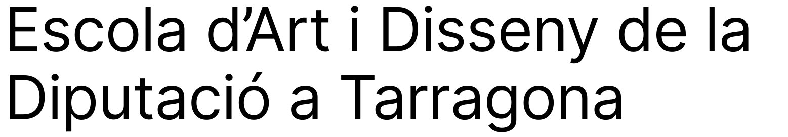
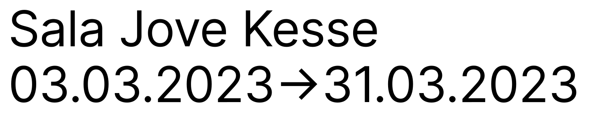
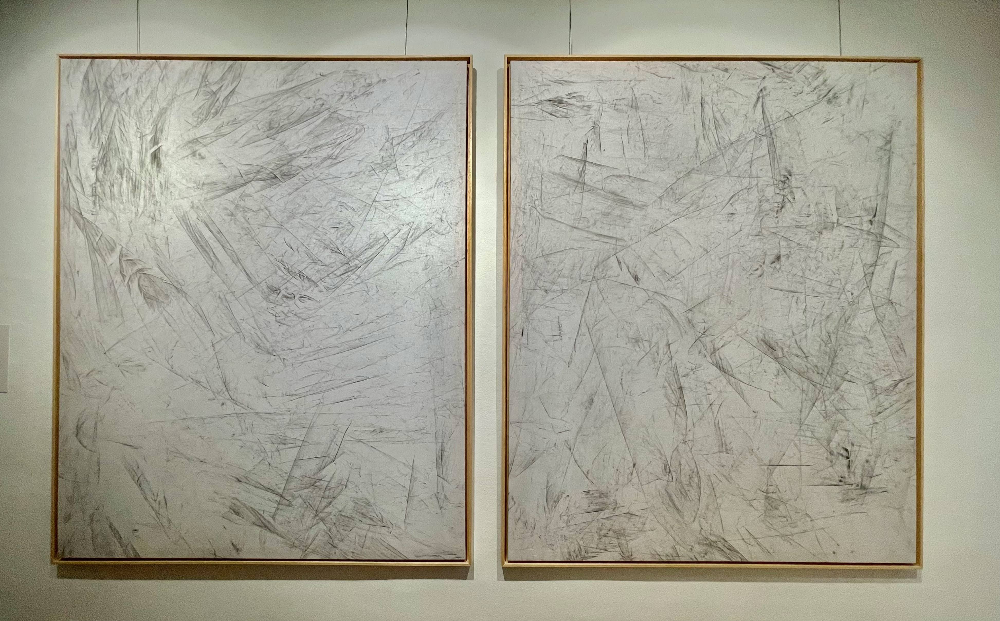
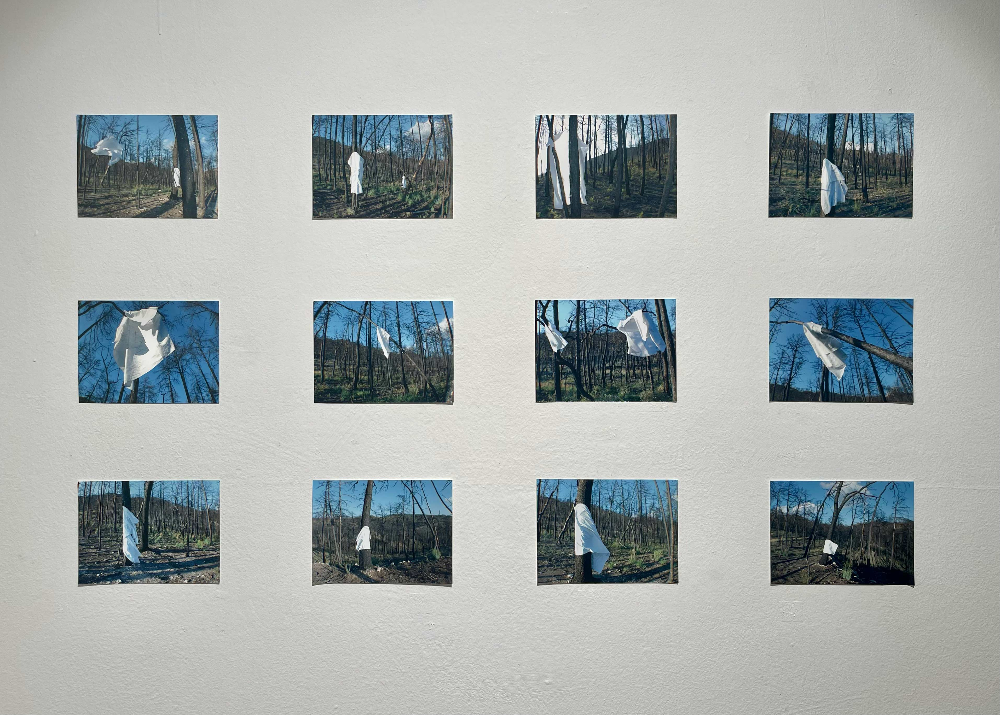
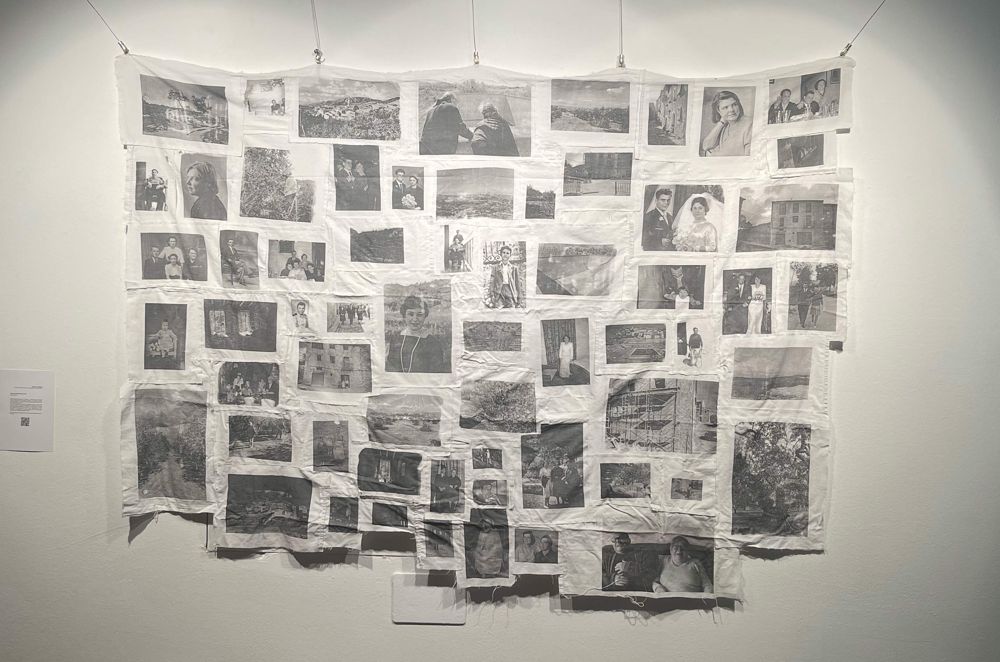
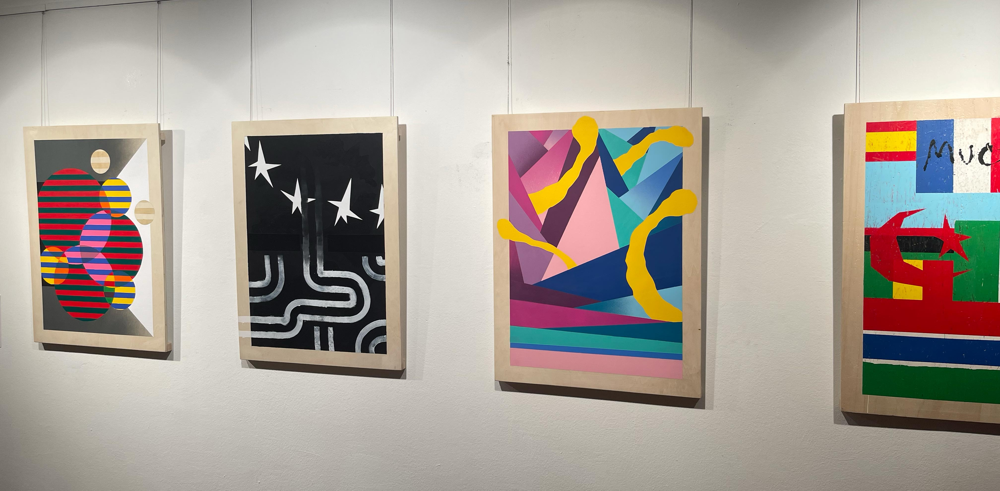

Del 3 al 31 de març. Sala Jove Kesse.
Exposició de projectes finals del CFGS d'Arts aplicades al mur de l'EAD Tarragona
Interpel·lar l'altre, fer del diàleg allò que en transforma i n'enriqueix. Amb aquest bagatge de nous aprenentatges generats per l'escolta, l'artista té el deure d'erigir imatges suggeridores per al públic. Imatges prou potents i prou obertes per a continuar eixamplant la conversa.
En el primer projecte d'aquesta exposició, Rosa Díaz dona el protagonisme a la natura. Deixa que siguin els arbres cremats de la Conca de Barberà qui n'expliquin els incendis, l'erosió i les dificultats del futur d'aquest territori. L'obra que presenta a l'espectador transita entre una proposta inicial de dansa performativa de la mateixa natura i un resultat en format de dibuixos dignes d'Expressionisme abstracte nord-americà dels quals l'artista només és el propiciador.
 Anna Munté, en el segon projecte, estableix un viatge a través dels objectes del seu avi matern entesos com a portadors de memòria. La fotografia recuperada passa ser un objecte plàstic que l'artista fa dialogar amb la natura. Novament el territori com a protagonista.
Isaïes Areny dona veu a les persones migrants que han lluitat per arribar a Europa en unes condicions dramàtiques i injustes. Relats que n'haurien de fer revisar la nostra identitat forjada en el benestar. Les converses d'Isaïes amb aquestes persones esdevenen la base de les seves pintures amb estètica d'art urbà, però que tenen tot un simbolisme sorgit dels trajectes i somnis relatats pels veritables protagonistes de la conversa.
Cap d'aquests artistes ha fet un projecte on ells mateixos són els protagonistes. De fet, les imatges que proposen al públic gairebé tampoc són una obra seva, on en tot cas s'ha generat en la conversa i l'escolta amb l'altre. Tampoc plantegen una recerca estètica per ella mateixa. No hi ha un parlar per parlar. Cada u ha trobat una materialitat plàstica, una forma, amb la qual suggerir un debat obert a l'espectador, un diàleg sense narratives tancades ni alliçonaments. Cada u ha establert el seu compromís particular amb el qual significa la creació artística al s. XXI.
Aquesta exposició us presenta tres projectes de joves que han escollit formar-se a l'Escola d'Art i Disseny de la Diputació a Tarragona, concretament en el Cicle Formatiu de Grau Superior d'Arts aplicades al Mur / Pintura. Esperem que percebeu diversitat, debat i camins propis de cada alumne. Tots tres artistes han adquirit un compromís amb ells mateixos en optar per aquests estudis. Des de l'art, des de les imatges plàstiques i metafòriques volen expressar les preocupacions que caracteritzen cada moment històric.
Francesc Perramon
Professor de l'EAD Tarragona